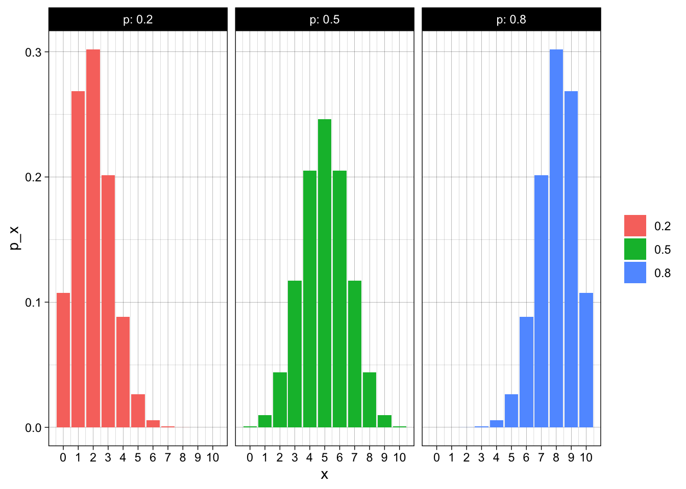

Lecture 12
The Binomial Probability Distribution
Section 5.2 The Binomial Probability Distribution
A binomial experiment is one that has these five characteristics:
- The experiment consists of n identical trials
- Each trial results in one of two outcomes. Success (S) and Failure (F)
- Probability of success is always equal to p and probability of failure is \(1 - p = q\).
- The trials are independent
- The binomial random variable x is the number of successes in n trials.
If you select 1000 people and ask them if they like basketball - is this a binomial experiment?
If you have 20 balls, 10 red and 10 blue - and you pick 4. Is the number of red balls that you pick the result of a binomial experiment?
The Binomial Probability Distribution
\[ P(x = k) = C^n_k p^k q^{n-k} = \frac{n!}{k! (n-k)!} p^k q^{n-k} \]
\[ \begin{aligned} \mu &= np \\ \sigma^2 &= npq \\ \sigma & = \sqrt{npq} \end{aligned} \]
Example 5.7
Let’s say a basketball player can make free throws with a probability of 80%. If she shoots 10 shots, what’s the probability that she makes exactly 8.
if p = .8 and n = 10, find P(x = 8)
- What is one way that we can observe 8 successes and 2 failures?
- What’s the probability of that happening?
- Can we observed 8 successes and 2 failures any other way?
Histograms for different values of p
x | 0.2 | 0.5 | 0.8 |
|---|---|---|---|
0 | 0.107 | 0.001 | 0.000 |
1 | 0.268 | 0.010 | 0.000 |
2 | 0.302 | 0.044 | 0.000 |
3 | 0.201 | 0.117 | 0.001 |
4 | 0.088 | 0.205 | 0.006 |
5 | 0.026 | 0.246 | 0.026 |
6 | 0.006 | 0.205 | 0.088 |
7 | 0.001 | 0.117 | 0.201 |
8 | 0.000 | 0.044 | 0.302 |
9 | 0.000 | 0.010 | 0.268 |
10 | 0.000 | 0.001 | 0.107 |
What if I now ask - what is the probability of making at least 6? (\(P(x \ge 6)\))
What about \(P(x \lt 6)\)?
Cumulative Binomial Probabilities
\[ P(\le 3) = p(0) + p(1) + p(2) + p(3) \]
x | 0.2 | 0.5 | 0.8 |
|---|---|---|---|
0 | 0.107 | 0.001 | 0.000 |
1 | 0.376 | 0.011 | 0.000 |
2 | 0.678 | 0.055 | 0.000 |
3 | 0.879 | 0.172 | 0.001 |
4 | 0.967 | 0.377 | 0.006 |
5 | 0.994 | 0.623 | 0.033 |
6 | 0.999 | 0.828 | 0.121 |
7 | 1.000 | 0.945 | 0.322 |
8 | 1.000 | 0.989 | 0.624 |
9 | 1.000 | 0.999 | 0.893 |
10 | 1.000 | 1.000 | 1.000 |
Let’s look at the column where p = 0.2, how do you find
- \(P(x \le 2)\)?
- \(P(x \gt 2)\)?
- \(P(x = 2)\)?
- \(P( 3 \le x \lt 6)\)?
See the table 1 in appendix I (pg 682)
Use the table for n = 5, p = 0.6.
Find probability of exactly 3 successes
Find probability of three or more successes

Example 5.11
Let’s assume someone is interested in testing if vitamin C help prevent the common cold during the winter. Let’s assume that the probability of making it through the winter without experiencing the common cold = 0.5.
You give 10 people vitamin C and only 2 get sick. What is the probability that only 2 or fewer folks get sick if the probability of getting sick is 0.5?
Homework
[1] "5.2.11-15, 5.2.39, 5.2.51, 5.2.55"Answers: Section 5.2